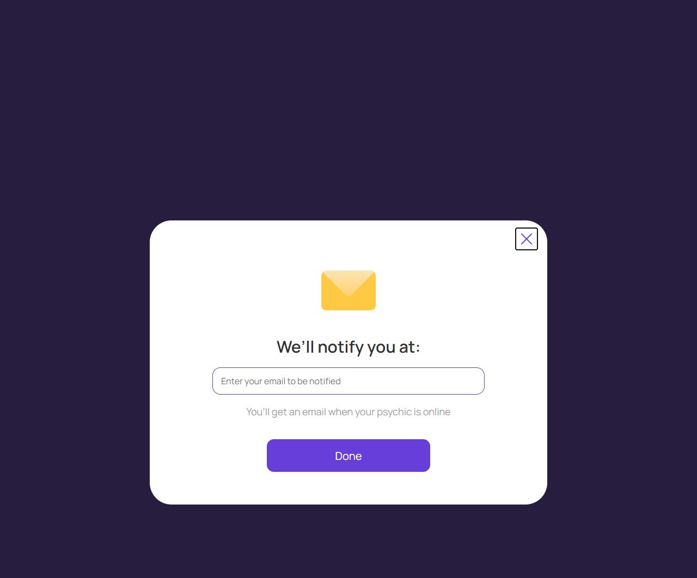
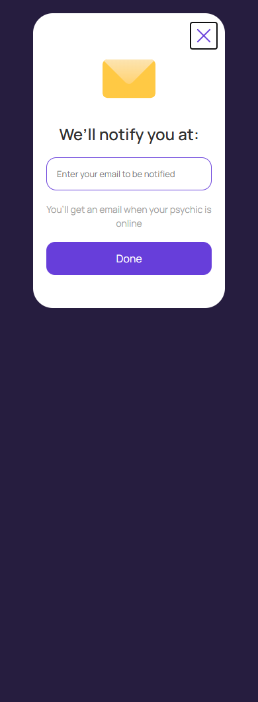

Email для уведомления
account/notify-email.html
Подтвердить адрес и подписку на событие.
| Когда открывается | Выбран Email |
|---|---|
| Данные | Email; подтверждение принадлежности; expert/event; согласие. |
| Сценарий | Done проверяет адрес и сохраняет подписку; при необходимости отправляется подтверждение. Успех не равен доставке уведомления о доступности. |
| Переходы | Диалог с Notify |
Общая и предметная логика. Снимки и подписи элементов — исходная редакция макета; поздние уточнения ТЗ имеют приоритет в своей области. Это не проверка текущего сайта.
Сопоставление с AskNebula
Существующие наблюдения 07–09.10.2026, без повторной проверки в этой передаче.
Нужна отдельная сверка соответствующего экрана/состояния референса. Отсутствие аналога не установлено.
Состояние 1280 · 1280 × 1062


Элементы и ожидаемые действия
| Элемент | Название в макете | Действие | Ожидаемый результат |
|---|---|---|---|
| E001 Виден | Close | Закрыть локальное окно или вернуться к инициатору; Stay отменяет намерение завершить. | Вернуть фокус и исходный контекст. Не выполнять оплату, удаление или Complete. При неизвестном результате платежа сначала сверить заказ. |
| E002 Виден | Email notification destination | Ввести email; проверить формат, нормализацию и назначение адреса. | Неверный формат остается в форме. Подтверждение принадлежности отдельно от успешной доставки письма. |
| E003 Виден | Done | Подтвердить выбранный канал и его принадлежность. | Сохранить подписку на событие. Telegram требует привязки к боту, одного телефона недостаточно; не показывать ложный успех. |
Состояние 390 · 390 × 1062


Элементы и ожидаемые действия
| Элемент | Название в макете | Действие | Ожидаемый результат |
|---|---|---|---|
| E001 Виден | Close | Закрыть локальное окно или вернуться к инициатору; Stay отменяет намерение завершить. | Вернуть фокус и исходный контекст. Не выполнять оплату, удаление или Complete. При неизвестном результате платежа сначала сверить заказ. |
| E002 Виден | Email notification destination | Ввести email; проверить формат, нормализацию и назначение адреса. | Неверный формат остается в форме. Подтверждение принадлежности отдельно от успешной доставки письма. |
| E003 Виден | Done | Подтвердить выбранный канал и его принадлежность. | Сохранить подписку на событие. Telegram требует привязки к боту, одного телефона недостаточно; не показывать ложный успех. |